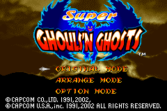

Super Ghouls 'n Ghosts

Complete on 2022-5-21
3 / 5
Release Date: Sep 23, 2002
Meta Score: 78
Screenshots

Notes
Infamously nintendo-hard action platformer. Requires near perfect play to progress as you can only take 2 hits before dying and health pickups seem to be rare. Not really for me.